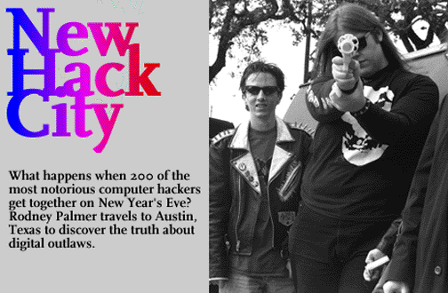

On the afternoon of his twenty-first birthday,
Death Vegetable was alone in his room in a Boston
apartment house. A sharp knock at his door was the first warning, then a
frantic voice blurted that a woman had overdosed on heroin in the next room.
Her body was white and rigid. Like a scene in a horror movie, the needle was
still in her arm. Her small fist clenched the plastic rig that carried her
lethal dose.
That same day I phoned him in to finalize our New Year's meeting in
Austin, Texas. He didn't say a word about the corpse in the room next door,
but he did sound a little nervous. I later found out Boston Police were
combing his apartment as we spoke. It was two days to
HoHoCon, the annual New Year's Eve
gathering of North America's computer hackers. The conference is notorious for
its carousing, all night hacking, and cutting-edge technological information.
Mr. Death Vegetable was to be my guide.
Of course, Death Vegetable is not his real name. It's a handle,a pseudonym
he adopted, as all hackers do, to protect their true identity. There are
federal agents who consider hackers public enemy number one, anarchist pirates
who pillage, destroy and then disappear into cyberspace. HoHoCon is flagged
by police as the place where America's most hardened hackers congregate, where
the Al Capones and the Bugsy Segals of the twenty-first century hold their
mob meetings.
Among many incidents, hackers have been blamed for crashing New York
City's phone system in 1991 (including communications to three airports),
breaking into the mainframe computer at a U.S. nuclear laboratory in
California and mischievously changing the temperature at a NASA control centre.
Many hackers have been locked up for computer crimes. Kevin Mitnick, for
example, has been imprisoned by Federal agents for stealing the newest line of
Digital Equipment Corporation's software and posting it to a computer inside
the University of Southern California.
And around the globe, hysteria over hackers reached a fevered pitch when the
Queen's private telephone numbers were made public.
On New Year's Eve in Austin the computer underground would bubble to the
surface and I went to find out if the outlaw rumours were true. Austin is, of
course, famous as the headquarters of the Legion of Doom, a group of hackers
led by Eric Bloodaxe (a.k.a. Chris Goggans) who were investigated by a Chicago
task force for tampering with corporate computer systems.
Naturally, police crackdowns have made hackers very suspicious of
nosy reporters. Even some I have met at other conferences, like
Hackers on Planet Earth (H.O.P.E.) in New York, have turned to me and
demanded, "How do I know you're not a fed?" At HoHo, I would need a calling
card like Death Vegetable.
Death Vegetable is one of North America's best known hackers, having been
interviewed on NBC, CBS, TBS, and CBC for his connection to a 1993 bombing
incident in Montreal where two teenagers blew off their fingers. It wasn't
Death Vegetable's fault. He simply posted public information about how to
build a bomb onto an electronic bulletin board. He didn't ask the boys to
build it. Nonetheless, it made him famous, increasing his status in HackLand.
HoHo is not your average conference. The majority of delegates are under
twenty-one but some already have criminal records for computer tampering or
fraud. Others are currently being investigated by federal agents. They are
the children of the information age. Weaned on Atari and Nintendo games,
they've advanced to more sophisticated toys like modems, scanners, cell
phones and demon diallers. These are the tools of the hacker and they were
everywhere as soon as the conference began.
After realizing what they'd let through the doors, the hotel tripled
security. Instantly, rumour spread that federal agents were bugging rooms. A
crowd of overzealous teenagers flooded the halls comparing high tech
electronic scanners; one raced up to the roof to check the main phone cables.
All this had the hotel staff wondering what the hell to name this storm that
had blown into their building.
Call it Hurricane Hack.
I got a message to meet Death Vegetable in room 316. I knock softly and
the door opens. There he is: six foot-five and 300 pounds, Comic-book
Villain-Size.
"Sorry if I sounded a little weird on the phone yesterday," he starts,
explaining the fatality. "It's kind of a hacker household and we had to hide a
few things once we called the cops."
Hackers are used to police officers combing their houses, confiscating
every electronic component right down to the microwave. But this was
different: for the first time, Death Vegetable had willingly invited the cops
in.
He's sharing his hotel room with colleagues from the Boston computer
underground. Count Zero's there, so is a man named Iskra, and, rare indeed, a
woman who goes by the handle Basil Valentine. All are in their twenties, dress
very cool and more than once are mistaken for a rock band.
It's a mistake they don't mind. In fact, hackers hang out in clusters,
and give their cliques names like Legion of Doom and Masters of Deception.
Death Vegetable's group is the
Cult of the Dead Cow.
Stars from these groups show up at conferences and other hackers literally
gape. They are the legends, those who are mentioned in books like Bruce
Sterlings'
The Hacker Crackdown. Names like Phiber Optik, Erik Bloodaxe and Emmanuel
Goldstein are the hacker equivalents of Babe Ruth, Joe DiMaggio and Ty Cobb.
(Sterling and Bloodaxe would both surface at HoHo.)
There is so much respect for the power of hackers that companies send
their computer experts to conferences in order to find out how their systems
might get broken into. And feds tail them, making it all seem exquisitely
sinister.
The clique in room 316 normally hangs out at a secret hacker bat-cave in
south Boston known as the LOpht . It is wired with a VAX mainframe and a score
of rewired computers retrieved from trash bins at M.I.T. It's a playground
for the hacker elite.
There they produce an electronic 'zine called Cult of the Dead Cow. It's
been eight years in underground publication, and has never seen a newsstand.
But here they are famous, and they know it. A handwritten sign taped to the
outside of their hotel room door reads, "Suite of the Elite."
Other arrivals begin to saunter into the suite. There is DaveSOB,
Novocaine and the conference organizer, Drunkfux. They may talk on the
Internet every day, but only meet in person at conferences like this one,
maybe twice a year.
Meanwhile, leather-clad Basil Valentine is chatting to me about her
dirt-bike hobby, but in the back of my mind I'm wondering when the chatter
will stop and the hacking will start.
Suddenly, word hits that someone's been arrested and threatened with jail
for picking the lock of the hotel administrative offices. Finally, some
action. Plainclothes members of the Austin Police High Tech crime unit are
already combing the hallways. Hotel staff confirm that federal agents have
also checked in. Exciting.
A clean-cut, eager looking kid calling himself Commander Crash bursts into
the room holding an electronic device in his hand. It looks like a
walkie-talkie. "Someone's room is bugged! It's on channel 161.73 MHz, that's
a federal band. It must be feds." He practically dissolves in giddy panic.
Crash is a new hacker on the block, but can describe in detail how he broke
into a bank machine. So when he says a room is bugged, people listen.
A small posse leaves the room with their radio scanners in search of the
federal agents. The collective paranoia here is so strong that J. Edgar Hoover
and Elliot Ness might as well be checking laptops at the door. Crash's
scanner, which normally monitors telephone lines, is picking up room tone,
running water, papers shuffling. Everything points to a room bug, but,
disappointingly, the posse can't find it.
Playing "Find The Fed" is not just reality, it's a game. Most of these
kids will never meet an actual fed, but the idea of "them" being "out there"
makes for a real life spy-versus-spy match. So most hackers develop a knack
for looking over their shoulders, hiding their real I.D. and never using their
own name when they check into a hotel. More than anything else, they do it
because they can. It's a hack: getting into a hotel without the staff having
a clue who you really are is just what you do if you're a hacker.
What you do if you're a police officer, is try to infiltrate the hacker
conference while remaining invisible. Over the last two years, cops have
raided several cons. Hackers have been caught with boxes full of stolen
telephone calling cards and breaking into computers via modem. Last summer,
before I attended the H.O.P.E. con in New York, I phoned the Secret Service
high tech crime unit in Washington D.C. to ask if any agents would be there. A
voice said, "I can neither confirm nor deny our attendance or non-attendance
of said conference... but if you give me your name and phone number, I can
have someone contact you should we attend."
Nobody called.
So far, the only laws being broken at this con would be more interesting
to the Drug Enforcement Agency. The latest rumour floating at HoHo is that the
DEA is going to start attending hacker cons because it's easier to collect
drugs as evidence for an arrest than it is to catch them in the act of a hack.
But that doesn't stop Death Vegetable and his Cult of the Dead Cow buddies
from indulging in some designer drugs.
"Who wants XTC?"
Death Vegetable asks matter-of-factly. Quickly the twenty-dollar bills unfold
and the party fun is guaranteed. Iskra and Death Vegetable immediately take
two pills. I, their obliging guest and an XTC neophyte, stop at a single dose.
"Drugs and hacking go hand-in-hand," explains Iskra as I furiously
scribble down notes in my book.
"Yeah," says Veggie. "Taking drugs is like hacking your brain."
He's serious. If hacking is taking an electro-chemical computing device
and altering it for your own enhancement, then taking XTC is doing the same
for your brain. At least that's the rationalization.
I invite Iskra to take a taxi into downtown Austin, but as soon as we get
going, the pills take hold and he has the driver turn around and take us back
to the hotel. Iskra's eyes begin to glaze and his breathing is so laboured I
wonder if we hadn't taken something other than what our vendor had promised.
Could some joker have chemically hacked the hacker's party? Paranoia grips my
brain. Was I out of my mind taking drugs with a bunch of hackers? And with the
hotel crawling with feds and hired-gun security! Jesus.
As we pull up to the hotel, Iskra's speech slows to a genuine hippie-like
slur: "Wow, this is cool."
Suddenly, I'm feeling the same way. Everything is cool. Iskra is cool.
The cab ride is cool. Everybody is cool. They should call it Empathy.
On our return to the Suite of the Elite, we find the gigantic Death Veggie
sitting alone. "Hello-Kitty" Christmas lights have been strung around the
window, intermittently lighting the dark room with a slow strobe effect.
Iskra's lower jaw begins to vibrate like a jackhammer. My molars grind slowly
and automatically. Death Veggie's lower lip flaps over his upper, and again,
and again. Soon he'll break the skin and his mouth will smear with blood. I'm
reminded of the heroin corpse in Boston.
Beam me up please....
On Saturday the conference begins in earnest. Drunkfux is making sure
everything runs smoothly. There are lessons on digital cash, Internet security
and lots of talk about the law. To look at Drunkfux, you probably wouldn't
think criminal law was his strong suit. He wears his hair neon orange and his
suede shoes electric green. But he's charismatic and professional, with a fast
charming wit. In hacker circles, Drunkfux is a legend. (I'm getting the
impression everyone at this conference is a legend of their own making.)
Naturally, Drunkfux booked the hotel under a pseudonym. His phone number
connects to a voice mailbox with a robotic, computerized message. No one at
the hotel will know how to find him after the conference is over. I guess
he'll just be that orange-haired, green-shoed Texan who rode off into the
sunset.
But HoHo Con is serious business to him. Drunkfux is part of the hacker
movement that is beginning to turn its curious computer talent into a
legitimate political movement. Breaking into bank machines and changing grades
on the school computer are activities only for the lamers-freshman hackers.
Drunkfux has designed HoHo as a place where hackers can learn they are part of
an important social movement.
One speaker is Doug Barnes. He sees hackers as a powerful social tool and
wants to recruit them for his Prometheus project. The idea is to use the
Internet to build an underground economy not responsible to any government. If
he can develop a complex enough encryption code-that is, an unhackable
software system-he'll be able to transfer real currency online. If business
can take place in cyberspace, Barnes believes taxes will become irrelevant.
Basil Valentine is intrigued by the idea. The notion of technology
replacing a government snaps attention from those more mature in the crowd. It
is the future.
"This is a social evolution," Basil says. "It's forcing people to come to
terms with issues like global law. For example, the U.S. government has no
right to make laws that apply to the whole Internet because they are not the
controllers of the Internet."
Basil works for a major computer company, she's a graduate of M.I.T., and
enjoys discussing the philosophic questions of the electronic future. But the
cops might think of her as a petty thief. She uses a hacker tool called a
"dialer" to place free long distance calls from payphones. Virtually every
hacker uses one to access unused phone lines. Is that really stealing?
Welcome to the grey area of computer law. It's an area of hacking that
Drunkfux believes is critical. This year he's invited Austin lawyer Steve
Ryan to teach the hackers their rights. Ryan is one of a handful of emerging
supporters of the Electronic Frontier Foundation who are lobbying for
freedom of information in cyberspace. A hacker turned lawyer could be a bitter
pill or a useful tool, depending on which side of the fence you stand. But
that's what's happening as hackers grow up. They want to have a say about the
shape of legislation concerning the electronic future.
Not all hacker goals, however, are so lofty. Many, especially the younger
ones, seem to want something far more vulgar than freedom: they want fame. And
so more time is spent telling tales than actually cranking out a manifesto.
I ask Death Veggie about his political agenda. "The Cult of the Dead Cow
is a Neo-Marxist, Anarcho-Socialist Terrorist organization with the
sole purpose of Getting On TV." He grins. He and Count Zero have taken
myth-making seriously. They have even named drinks after themselves. A "Death
Vegetable" is 190-proof grain alcohol with V-8 juice. The liquor is flammable,
and comes with a warning. If you can drink it, you are worthy.
"Count Zero isn't as hard-core as me so his drink isn't as hard-core."
In fact it's delectable. Cinnamon liqueur and grenadine: a classy drink
for a classy count.
Veggie has even found an Austin distributor for his "Cult of the Dead Cow"
clothing line and stickers. For him, hacking is becoming a business venture
as much as a way of life.
He has had his brush with the more serious implications of hacking during
the bombing incident two years ago. "I feel really bad about that," he says.
"But I don't feel responsible. If you blame me for what they did, then you
have to blame the person who wrote that high school science book, and the
person who built the computer."
I still haven't seen any real hacking. The juiciest activity is taking
place at the pay phones in the lobby, where youngsters like DaveSOB are
displaying Southern Bell paraphernalia. If cool software and nifty devices are
currency in the hacker culture, then it's also bragwear on which hacker
status rises and falls.
DaveSOB pulls out a catalogue with a "Top Secret" label warning that the
book contains protected information and should be shredded before disposal. He
says he's using it to order a pay phone for his house. "I already have two,"
he grins wickedly.
DaveSOB is known as a phreaker: a phone freak. Phreakers learn as much as
they can about the telephone system in order to make free calls or simply to
brag to friends about the tricks they can pull. Most of a phreaker's
information comes from intelligence gathering known as "Trashing" or "Dumpster
Diving"-that is, taking documents which contain security passwords or codes
from a phone company's garbage. A photocopied map of all the best trash bins
in Denver is circulating at the con, complete with a legend that tells how
often it's filled, emptied, and what type of security, if any, is utilized by
the company.
While showing me all his stuff faster than I can scribble it down,
DaveSOB cranes his neck to see through the window behind me and waves, "Hello
Mister Fed. He's been taking pictures of me all day." I look behind me,
through the window, but nobody's there. He's either imagining it, or wants me
to imagine it.
Meanwhile, a few feet away, Commander Crash is bragging about hacking the
bank machine. But there's one thing missing from his story: how much money he
stole. The answer: none. He just asked for a balance. He didn't want to rob
the machine, just beat it.
"People think hackers are out there to move satellites and start World War
III," explains Death Veggie. "That is not what hackers are out there for."
"Hackers are doing more creative things, like putting up Web servers with
their own information," adds Count Zero. "They're creating a lot more than
they're destroying and that's what's changed in the last ten years."
By midnight on New Year's Eve, Veggie's story about the dead woman has
become lore. It has been told so many times I'm not sure if it really
happened, or was created as part of the Cult of the Dead Cow myth.
Nonetheless, it has become part of the legend of HoHo Con '94. The last night
closed with more chat, more rumours and stories about the digital outlaws
sucking on the nozzle of a tank filled with nitrous oxide.
There were no great hacks. There were no Al Capones, or Bugsy Segals.
Yes, someone was caught examining an electrical breaker box. A hotel passkey
did disappear from a maid's cleaning cart. But the so-called outlaws were
probably no worse than the last high school football team that stayed
overnight for the state finals.
While some people worry that hackers might try to blow up the world, it's
possible they're just living one long pajama party, gripping the underwear of
corporate North America and giving it an oversized digital wedgie.
They ridicule authority, and celebrate the inane. Their hero is Ben
Franklin, who hacked electricity. Their role model is founding father Tom
Jefferson, who hacked the constitution. At best, they envision themselves as
freedom fighters at a crucial time in America's evolution. At worst, they pull
stupid stunts that cause serious damage. But mostly they're just talented
kids who sometimes cross the fine line between curiosity and crime.
After HoHo Con they all return to their lives that are not made of myth.
Count Zero to his computer programming job at Massachusetts General, and Basil
to computer trouble-shooting. For Death Vegetable, returning to Boston means
hearing about the funeral. He decides to linger in Austin for a few days, wait
it out before he returns to a house of mourning.
I got home only to discover that my precious notebook was gone. My
detailed account of the HoHo Con! After spending three days with these people,
was I just another journalist to be hacked? Oh, the wicked thoughts.
The next morning the phone rang. It was Drunkfux. He had found my
notebook. Twenty-four hours later, it arrived in my hands. I barely knew the
guy, but he wouldn't even let me pay for the courier.
This Article taken directly from
Shift Magazine, March '95
issue.. By Rodney Palmer

Cult of the Dead Cow - Index